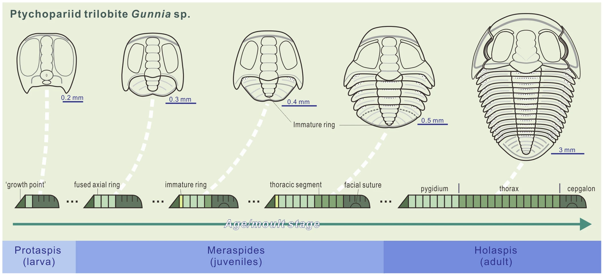

Image: Shen, C., Clarkson, E., Yang, J. et al. Development and trunk segmentation of early instars of a ptychopariid trilobite from Cambrian Stage 5 of China. Sci Rep 4, 6970 (2014). doi:10.1038/srep06970The PaleoSize Database is an archive of body sizes for fossil marine animals–including quite a few genera whose range extends to the Recent. We currently focus on solitariy marine taxa from the following phyla: Arthropoda, Brachiopoda, Chordata, Echinodermata, and Mollusca. We also have sizes for benthic foraminifera.
Currently, we have two data files available in this repository. The first, genera_range_through.txt is a file with the total stratigraphic range, body size, and functional ecological mode for Phanerozoic marine genera. The second, species_sizes.txt, is compilation of species-level body sizes for species of marine animals and benthic foraminifera.
The linked document, measurement_guide.pdf, provides a workflow for finding body size measurements from the literature and recording them in an excel spreadsheet. Importantly, the guide provides illustrations for the linear measurements that are to be taken for each Linnaean class. Below is a list of Excel templates for making body size measurements.